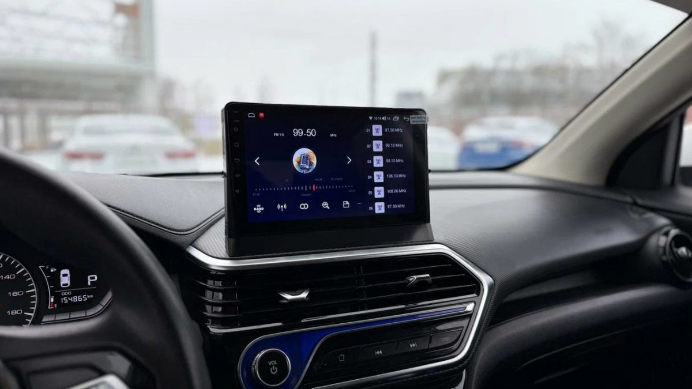

Утро первого настоящего мороза. Две машины стоят у одного подъезда. Соседка в белом кроссовере скребёт лобовое стекло, мотор у неё рычит на холостых, печка дует холодным. Вторая машина уже с чистыми стёклами, в салоне тепло, хозяин садится и сразу едет. Обе машины «прогреты», но по-разному, и разница в этом «по-разному» – десятки лишних холодных пусков за зиму.
Автозапуск и предпусковой подогреватель решают одну задачу – чтобы утром не садиться в ледяную машину. Но делают это противоположным способом. Автозапуск заводит холодный мотор пораньше, подогреватель греет мотор до пуска. Дальше по порядку: что происходит с двигателем, сколько энергии и топлива уходит, кому что подходит и когда разумно ставить оба.

Что происходит с мотором при холодном пуске
В сильный мороз масло в картере густеет. Пока насос не прокачает его по всем каналам, первые секунды после пуска детали работают почти без смазки. Это самый тяжёлый момент в жизни двигателя: именно холодные пуски дают большую часть износа цилиндров, вкладышей и турбины, если она есть.
Дальше мотор греется сам. На холостых это идёт медленно: двигатель почти не нагружен, тепла выделяет мало, а современные экономичные моторы на холостом ходу греются особенно вяло. Печка в салоне начинает дуть тёплым только тогда, когда нагреется охлаждающая жидкость, а у дизеля это может растянуться надолго.
Отсюда главное различие. Автозапуск не отменяет холодный пуск, а просто переносит его на время, когда вы ещё пьёте чай. Подогреватель убирает сам холодный пуск: двигатель заводится уже тёплым.
Как работает автозапуск
Автозапуск – это функция охранной системы. Сигнализация с автозапуском по команде с брелока, из приложения, по будильнику или по температуре заводит двигатель, держит его на холостых заданное время и глушит.
Чтобы машина завелась без ключа, нужен обход штатного иммобилайзера. Современный обход работает через шину CAN и ключа в салоне не требует. Старый способ с запасным ключом, спрятанным под панелью, ослабляет защиту, и от него лучше отказаться.
Сильные стороны автозапуска:
- Тёплый салон и чистые стёкла к выходу. Печка дует, обогрев стекла и сидений работает, если их включение умеет охранная система.
- Управление из дома. С GSM-модулем и приложением вы видите температуру в салоне и напряжение аккумулятора и заводите машину хоть с работы.
- Охрана в комплекте. Вы получаете не только прогрев, но и сигнализацию с блокировками.
Слабые стороны: холодный пуск никуда не делся, на холостых сгорает топливо, а аккумулятор каждое утро отдаёт стартеру много энергии и почти не успевает восстановиться, если ездите вы недалеко.
Какие бывают подогреватели
Слово «вебасто» в народе давно стало общим именем для любого подогревателя, хотя это название одной немецкой марки. На деле под ним прячутся три разных устройства.
Электрический подогреватель на 220 вольт. Небольшой ТЭН ставят в блок цилиндров или в разрыв патрубка системы охлаждения, иногда вместе с насосом. Работает от розетки, стоит недорого, мотор греет хорошо. Но нужна розетка рядом с машиной: в гараже или у дома с участком это удобно, в обычном дворе многоэтажки почти невыполнимо.
Жидкостный предпусковой подогреватель. Автономное устройство с собственной камерой сгорания. Берёт топливо из бака машины, электричество из аккумулятора, сжигает топливо и греет охлаждающую жидкость, а встроенный насос гоняет её по рубашке двигателя и радиатору печки. Через некоторое время мотор и салон тёплые, двигатель ещё ни разу не провернулся. Включают по таймеру, с пульта или из приложения.
Автономный отопитель (воздушный). Похоже по устройству, но греет только воздух в салоне. Мотор он не прогревает. Это решение для тех, кто подолгу сидит в стоящей машине, а не для утреннего старта.
Главный кандидат на роль «вместо автозапуска» – жидкостный предпусковой подогреватель. О нём дальше.
Предпусковой подогреватель: плюсы и подводные камни
Плюсы понятные. Двигатель заводится тёплым, масло жидкое, износ при пуске минимальный. Стартер крутит легко, аккумулятору проще. Печка дует тёплым сразу после пуска, потому что тосол уже нагрет. Топлива подогреватель жжёт заметно меньше, чем двигатель на холостых.
Подводные камни тоже есть, и о них стоит знать до покупки.
- Аккумулятор. Подогреватель питается от батареи: свеча розжига, насос, вентилятор печки. Если зимой вы ездите по десять минут от дома до работы, батарея не успевает зарядиться, и через неделю ежедневного подогрева может не хватить сил на стартер. Мастер должен спросить о ваших поездках и при необходимости предложить батарею большей ёмкости или контроль напряжения.
- Мощность под мотор. Подогреватели выпускают разной мощности. Слабый на большом двигателе будет греть его долго и до полной температуры в сильный мороз может не дотянуть.
- Место установки. Котёл ставят в моторном отсеке, врезают в контур охлаждения и топливную систему, выхлоп выводят под машину. На некоторых моделях места мало, и работа становится сложнее.
- Обслуживание. Раз в сезон подогреватель проверяют и запускают заранее, ещё в октябре, а не в первый мороз.

Сигнализация с автозапуском и подогреватель вместе
Самая удобная зимняя связка – когда работают оба. Подогреватель включается по таймеру или из приложения и греет двигатель. Когда тосол нагрелся, сигнализация заводит уже тёплый мотор, и через пару минут в салоне жарко, стёкла оттаивают, генератор подзаряжает батарею, которую подогреватель только что разряжал.
Управление сводят в одно приложение: многие охранные системы с GSM-модулем умеют включать подогреватель как отдельный канал. Тогда вы с телефона видите и температуру двигателя, и напряжение аккумулятора, и решаете, что включать.
Эта связка особенно полезна дизелям. Дизель на холостых греется дольше бензинового мотора, а холодный пуск в мороз для него тяжелее. Если к тому же в баке не зимнее топливо, подогреватель может оказаться тем, что вообще позволит завестись.
Что выбрать под вашу жизнь
- Машина ночует во дворе многоэтажки, ездите каждый день. Минимум – сигнализация с автозапуском и GSM. Если двигатель дизельный или турбированный и вы цените его ресурс, добавьте жидкостный подогреватель.
- Гараж или дом с розеткой рядом. Электрический подогреватель на 220 вольт плюс таймер на розетку: мотор тёплый к утру, автозапуск нужен разве что ради тёплого салона.
- Короткие поездки по городу. Здесь осторожно и с автозапуском, и с подогревателем: оба тянут аккумулятор. Нужна настройка по напряжению и, возможно, другая батарея.
- Трасса М8 каждые выходные, дальние поездки на дачу. Подогреватель окупается тем, что машина заводится уверенно даже после ночи в поле, где автозапуск по брелоку просто не достанет.
- Новая машина на гарантии. Любое вмешательство в двигатель и проводку делают у тех, у кого есть сертификаты на установку, и с документами на работу.
Из чего складывается стоимость для кошелька
Цифру без осмотра честно не назовёт никто, но слагаемые понятны заранее.
У автозапуска это сама охранная система (брелок, GSM, GPS), модуль обхода иммобилайзера под вашу модель и монтаж. Дальше – расход на холостых каждое утро и нагрузка на аккумулятор, который в итоге приходится менять чаще.
У подогревателя это прибор нужной мощности, монтажный комплект, врезка в охлаждение и топливо, пульт или модуль управления и работа, которая у разных машин сильно отличается по сложности. Потом – небольшой расход топлива и ежегодная проверка.
Поэтому вопрос «что дешевле» решается не ценником в магазине, а вашими поездками, морозами и тем, сколько лет вы собираетесь ездить на этой машине.
Частые вопросы
Вредно ли каждый день греть машину автозапуском? Сам прогрев не вредит, вредит холодный пуск, который автозапуск не убирает, и долгая работа на холостых. Разумная длительность прогрева и контроль аккумулятора снимают большую часть вопросов.
Можно ли поставить вебасто на бензиновую машину? Да, жидкостные подогреватели выпускают и для бензиновых, и для дизельных моторов. Подбирают их под тип топлива и объём двигателя.
Что такое автономный отопитель и подойдёт ли он вместо подогревателя? Он греет только салон, двигатель остаётся холодным. Для утреннего старта нужен именно предпусковой подогреватель, автономка нужна тем, кто подолгу сидит в стоящей машине.
Можно ли сделать установку автозапуска на механическую коробку? Можно, через режим программной нейтрали: вы оставляете машину на нейтрали, система это запоминает и заводит только так. Без этой процедуры автозапуск на механике ставить нельзя.
Как включать подогреватель из дома, если машина далеко? Через GSM-модуль и приложение. Брелок в панельных дворах часто не добивает, а телефону нужна только связь.
Где поставить автозапуск и подогреватель в Ярославле
Студия «Звук на Волге», Ярославль, проспект Октября, 82б. Пн–пт 8:30–20:00, сб–вс 10:00–19:00. Мы ставим сигнализации с автозапуском и управлением из приложения, подбираем и устанавливаем предпусковые подогреватели и автономные отопители. После установки поможем с настройками.
Подобрать вариант под вашу машину: автозапуск и подогреватели в Ярославле. Телефон +7 902 220-75-55, сообщения в ВК: vk.me/avtostil_yaroslavl.
Мы долго работали под именем «Автостиль». Теперь студия называется «Звук на Волге»: обновились и выбрали имя по тому, чем занимаемся в Ярославле. Адрес прежний.